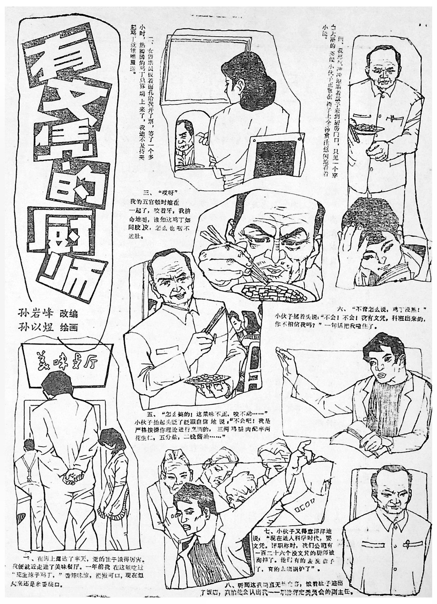

孙以煜绘画；孙岩峰改编 《人事》1986年第2期（总第5期），封三
有文凭的厨师
The Chef with a Diploma
- Text in the drawing
- 美味餐厅
The Delicious Restaurant - Panel text
- 在街上溜达了半天，觉的肚子饿得厉害。我便就近走进了美味餐厅。一年前我在这里吃过“花生辣子鸡丁，”香辣味浓，酥嫩可口，现在想起来还是余香绕口。
After wandering the streets for half the day I felt terribly hungry, so I went into the nearest place, the Delicious Restaurant. A year ago I had eaten their “spicy chicken with peanuts” here — fragrant, fiery, tender and delicious; just thinking of it I could still taste it. - 女售票员板着面孔给我开了票，等了一个多小时，热腾腾的鸡丁总算端上来了，我迫不及待夹起鸡丁就往嘴里送。
The woman at the ticket window wrote out my ticket with a stony face. After more than an hour the steaming chicken finally arrived, and I couldn't wait to pop a piece into my mouth. - “哎呀”我的五官顿时缩在一起了，咬着牙，我拚命地咽，谁知这鸡丁如同胶皮，怎么也咽不进肚。
“Ugh!” My whole face screwed up. Gritting my teeth, I tried with all my might to swallow, but the chicken was like rubber and simply would not go down. - 我怒气冲冲地端着盘子来到厨房门口，只见一个穿白大褂的英俊小伙子正靠在椅子上全神贯注悠闲地看着小说。
Furious, I carried the plate to the kitchen door. There sat a handsome young man in a white coat, leaning back in his chair, absorbed at his leisure in a novel. - “怎么搞的！这菜味不正，咬不动……”小伙子抬起头眨了眨眼自信地说：“不会吧！我是严格按操作理论进行烹调的，三两鸡腿肉配半两花生仁，五分盐，二钱酱油……”
“What's going on? This dish tastes wrong and I can't chew it…” The young man looked up, blinked, and said confidently: “Impossible! I cook strictly according to operational theory: three liang of chicken leg to half a liang of peanuts, five fen of salt, two qian of soy sauce…” - “不管怎么说，鸡丁没熟！”小伙子摇着头说：“不会！不会！我有文凭，科班出来的，你不相信我吗？”一句话把我噎住了。
“Whatever you say, the chicken isn't cooked!” The young man shook his head: “It can't be! It can't be! I have a diploma, I'm professionally trained — don't you believe me?” That left me speechless. - 小伙子又得意洋洋地说：“现在进入科学时代，要文凭。评职称时，我们公司有一百二十六个没文凭的厨师被淘掉了。他们有的去洗盘子了，有的去烧锅炉了”。
Then, very pleased with himself, the young man added: “This is the age of science now; you need a diploma. When professional titles were assessed, our company weeded out a hundred and twenty-six cooks without diplomas. Some went off to wash dishes, some to stoke the boilers.” - 听到这我简直无地自容，饿着肚子逃出了饭店，真怕他会认出我——职称评定委员会的副主任。
At that I wanted the ground to swallow me. I fled the restaurant on an empty stomach, terrified he would recognize me — the deputy chairman of the professional-title assessment committee.
- 在街上溜达了半天，觉的肚子饿得厉害。我便就近走进了美味餐厅。一年前我在这里吃过“花生辣子鸡丁，”香辣味浓，酥嫩可口，现在想起来还是余香绕口。
- Description
- Eight-panel picture story: a diner is served rubbery chicken by a young chef who insists he cooks “according to operational theory” and has a diploma — 126 cooks without diplomas were weeded out when professional titles were assessed. The diner flees in shame: he is deputy chairman of that assessment committee.
- Note
- 职称评定 (professional-title evaluation) relied heavily on formal diplomas in the mid-1980s.
- Artists
- Sun Yiyu 孙以煜 (drawn); Sun Yanfeng 孙岩峰 (adapted)
- Published in
- 《人事》1986年第2期（总第5期）, inside back cover
- Themes
- Diplomas and credentials · Talent and its neglect · Picture stories (连环画)

Cite
Sun Yiyu and Sun Yanfeng, “有文凭的厨师” [The Chef with a Diploma], Renshi (Personnel) 《人事》, 1986, no. 2, inside back cover.